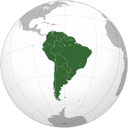

America do Sul |
|
Atravessado pela Linha do Equador e pelo Trópico de Capricórnio, o continente possui a segunda maior cordilheira do mundo na Região Andina que se estende desde a Venezuela até o Chile e a Argentina. No vale do Amazonas encontramos a maior bacia hidrográfica do mundo, e também, a região de maior biodiversidade: a floresta Amazônica. O clima tropical úmido garante alta densidade pluviométrica em toda a região que se situa entre a Linha do Equador e o Trópico de Capricórnio, com algumas exceções devido ao relevo. O clima no continente Sul Americano é bastante diversificado devido ao tamanho do continente. Na região mais próxima a linha equatorial predomina o clima tropical úmido. Ao sul do Trópico de Capricórnio têm-se áreas de clima temperado. As regiões mais frias do continente são o extremo sul e a região dos Andes, devido à altitude. Em contraste, a América do Sul também abriga o deserto mais seco do mundo, o Deserto do Atacama no Chile. Lá existem pessoas que nunca viram uma chuva na vida: no local podem-se passar até 20 anos sem chover. |
